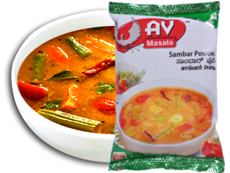
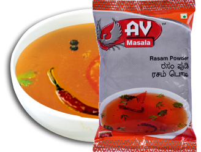
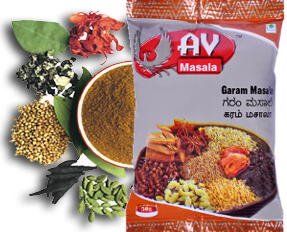
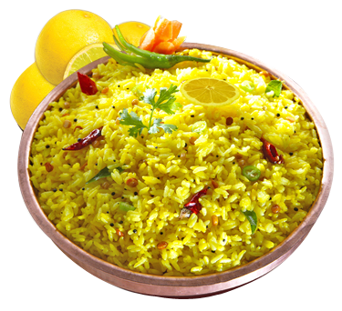

Our Products
Vegetarian Masalas

Sambar Powder
Brings the whiff of South India in all its authenticity, for delightful dosas ,vadas, idlis, rice especially and..
The AV Rasam has a taste of its own and an assured place in any five-course meal. Rasam preparation..
A perfect spice blend from Indian culinery, AV’s Garam Masala is just the appropriate mix..
text here text here text here text here text here text here text here text here text here..
Brings the whiff of South India in all its authenticity, for delightful dosas ,vadas, idlis, rice especially and..
>>read more Rasam Powder
The AV Rasam has a taste of its own and an assured place in any five-course meal. Rasam preparation..
>>read more Garam Masala
A perfect spice blend from Indian culinery, AV’s Garam Masala is just the appropriate mix..
>>read more Lemon Rice Powder
text here text here text here text here text here text here text here text here text here..
>>read more